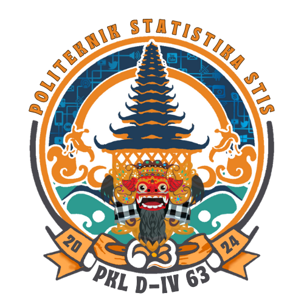

Web Hasil Visualisasi
Pengolahan Modul 1
Hasil Penelitian
Blok III
Blok IV
Blok V
Blok VI
Blok VII
BLOK IV
PEMANFAATAN TIK PADA USAHA PARIWISATA
Daftar Hasil Visualisasi
308 x 401b - Jumlah Pemilik Usaha Berdasarkan Skala Usaha dan Perangkat Digital
308 x 403b - Jumlah Pemilik Usaha Berdasarkan Skala Usaha dan Sosial Media
308 x 405b - Jumlah Unit Usaha Berdasarkan Jenis Sarana Promosi dan Skala Usaha
308 x 407b - Jumlah Unit Usaha Berdasarkan Jenis Sarana Penjualan dan Skala Usaha
308 x 421 - Jumlah Pemilik Usaha Berdasarkan Skala Usaha dan Pemanfaatan TIK
401a - Penggunaan Perangkat Digital Untuk Aktivitas
401b - Jenis Perangkat Digital yang Digunakan
403a - Penggunaan Aplikasi untuk Berkomunikasi
403b - Aplikasi Komunikasi yang Digunakan
405a - Unit Usaha Berdasarkan Pemanfaatan TIK pada Kegiatan Promosi
405b - Sarana Promosi yang Digunakan
407a - Unit Usaha Berdasarkan Pemanfaatan TIK pada Kegiatan Penjualan
407b - Sarana Penjualan Usaha yang Digunakan
409a - Unit Usaha Berdasarkan Pemanfaatan TIK pada Kegiatan Promosi
409b - Sarana Transaksi Pembayaran yang Disediakan
411 - Pemanfaatan TIK Dalam Catatan Transaksi Pembayaran
413 - Pemanfaatan TIK Dalam Catatan Keuangan Unit Usaha
415 - Pemanfaatan TIK Dalam Perencanaan Keuangan Unit Usaha
417 - Pemanfaatan TIK Dalam Pengadaan Kebutuhan/Logistik Unit Usaha
419 - Pemanfaatan TIK Dalam Aktivitas Manajemen Pegawai Unit Usaha
421 - Pemanfaatan TIK Secara Keseluruhan Dalam Unit Usaha
423 - Ada Tidaknya Pekerja yang Bertanggungjawab Dalam Penggunaan TIK
424 - Rata-Rata Jumlah Tenaga Kerja TIK Berdasarkan Skala Unit Usaha
Pilih Visualisasi